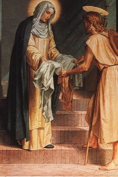
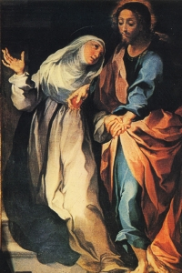
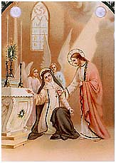
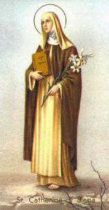

“FORÇA DA VOCAÇÃOâ€
ORDEM TERCEIRA DA PENITÊNCIA
Ela estava
decidida a entrar na Ordem de São Domingos. Por essa razão, a Senhora Lapa, sua
mãe, desanimada de lutar, decidiu concordar e fazer a vontade 
Solicitada a admissão de Catarina, foi rejeitada. Objetaram que ela não tinha dezoito anos, era jovem demais, bonita demais e imatura para o tipo de vida ao qual aspirava. As senhoras da Penitência (denominadas “Mantellataâ€) alegavam que sua congregação se destinava exclusivamente as viúvas, ou mulheres de idade respeitável e de boa reputação. Na verdade, isto era apenas um pretexto.
Todavia, os desígnios de DEUS são insondáveis, e assim, como por um milagre, todos estes pretextos e dificuldades desapareceram. Aconteceu do seguinte modo: subitamente Catarina adoeceu. Ficou coberta de pústulas e se desfigurou, com febre elevadíssima. Uma grande decepção... Mas ela era mulher de vontade forte, quando queria algo, nunca desistia. No presente caso, ensaiou até fazer chantagem com sua mãe, dizendo: “Mãe querida, se quiser que eu me cure, faça com que se realize o meu desejo de receber o hábito das Irmãs da Penitência de São Domingos. Se isto não acontecer, temo que DEUS e São Domingos que me chamam a seu serviço, dêem um jeito para que a senhora não me veja nem com hábito e nem sem eleâ€!
A senhora Lapa ficou assustada diante daquela ameaça, e foi ao encontro das Irmãs da Penitência. As Irmãs decidiram escolher entre elas, as mais experientes, para visitar a doente e testar as suas qualidades e o seu caráter. A prudência, a sabedoria e o ardor da vocação que ela manifestou no momento do exame, alcançaram das senhoras da Penitência a decisão favorável, pois elas saíram satisfeitas e edificadas com as respostas e afirmações de Catarina. Pela Vontade do SENHOR ela venceu todos os obstáculos.
A sua entrada oficial na Congregação, ocorreu no final do ano 1374, ou início de 1375, na “Cappella delle Volte, em San Domenico no Camporeggioâ€, onde a cerimônia foi realizada diante da prioresa e de toda Irmandade. Das mãos do mestre da Congregação, Frei Bartolomeo Montucci, Catarina recebeu o traje branco, símbolo da pureza, e o grande manto negro, símbolo da humildade, das Terciárias de São Domingos. Daquele momento em diante, segundo a sua própria expressão, seu ideal seria: “Mantellare l’anima per l’affeto della virtú†(Vestir a alma das virtudes afetivas).
NOVAMENTE COM A FAMÍLIA
Catarina voltou para junto de sua família. Devia cumprir um ano de Noviciado, orientada pelo Mestre das Terciárias, pelos Irmãos Pregadores e pelas Irmãs da Penitência. Ficou perfeitamente unida em espírito à Ordem dos Dominicanos. E nos 365 dias do ano, em sua casa, ela manteve um silêncio absoluto, só falando o estritamente necessário. Cumpria rigorosamente os três votos das ordens religiosas: Castidade, Obediência e Pobreza. Nunca deixou o seu trabalho doméstico que realizava com cuidado e interesse, e pontualmente, se encontrava na Congregação nos horários destinados a sua função. O restante das horas permanecia em seu pequeno aposento em orações e penitências, num amoroso deserto, buscando aproximar sempre mais a sua alma de DEUS.
NA CASA DA CONGREGAÇÃO

Desse modo, externamente pouca coisa acontecia na sua vida de reclusa devotada decididamente ao progresso espiritual. Internamente, todavia, se processava uma grande mudança! Apesar de às vezes assaltada por inquietações, perturbações e fortes dúvidas, por exemplo: como distinguir as visões de DEUS das do demônio, Catarina obteve a resposta do próprio JESUS:
“Seria fácil iluminar a tua alma por meio de uma inspiração que te permitisse distinguir uma visão de outra. Como sou a Verdade, minhas visões devem sempre produzir um maior conhecimento da verdade. O conhecimento da verdade, no que ME diz respeito e no que diz respeito à verdade em si mesma, é indispensável à alma. Nas visões do inimigo acontece exatamente o contrário. Como ele é o pai da mentira e rei de todos os filhos do orgulho, como não pode dar mais do que tem, suas visões sempre geram na alma certo amor próprio (vaidade) e certa auto-satisfação, de que consiste precisamente o orgulho. Assim, ao refletir sobre ti mesma, poderás reconhecer de onde veio a tua visão, se da verdade ou da mentira, pois a verdade torna a alma humilde, e a mentira a torna orgulhosaâ€.
As visões do SENHOR se multiplicaram de modo notável e justamente, uma das primeiras aparições lhe causou muita admiração e ganhou fama:
“Sabes, Minha filha, quem tu és e Quem EU Sou? Se chegares saber estas duas coisas será bem-aventurada. Tu és aquela que não é; EU, ao contrário, Sou AQUELE que Sou. Se mantiveres na tua alma essa distinção, o inimigo não poderá te enganar e evitarás todas as suas armadilhas. Não permitirás jamais coisa alguma que seja contrária aos Meus Mandamentos, e obterás sem dificuldade toda graça, toda verdade e toda luzâ€.
JESUS aparecia e conversava com ela, ensinando e aconselhando. Outras vezes ficava em silêncio e depois desaparecia. Catarina passava então, longos momentos de solidão, angústia, visões infernais e tentações de todos os tipos. Chegava a se imaginar condenada. Os místicos conhecem essas horas de desamparo, “na noite escura do espíritoâ€. Um dia, as forças do mal atuaram de modo tão violento que ela se revoltou e em voz alta, proclamou a sua vocação. Neste momento, formou-se uma grande luminosidade e apareceu CRISTO crucificado. ELE disse:
- “Catarina, Minha filha, vês o quanto sofri por ti? É preciso que também aceites sofrer por MIMâ€.
Ela respondeu: “SENHOR, onde estavas quando o meu coração se atormentava com as tentaçõesâ€?
O SENHOR respondeu: “Estava em teu coraçãoâ€.
Ela disse: “SENHOR, TU és a Verdade, e venero TUA Majestade. Mas como posso crer que estavas em meu coração se ele estava repleto de pensamentos imundos e repugnantesâ€?
JESUS respondeu: “Esses pensamentos e essas tentações causavam em seu coração alegria ou dor? Prazer ou aversãoâ€?
Ela falou: “Uma grande dor e uma grande aversãoâ€.
E o SENHOR lhe disse: “Quem, senão EU te fazia sentir essa aversão, pois EU estava escondido em teu coração? Se EU não estivesse presente, esses pensamentos teriam penetrado em teu coração e terias sentido um grande prazer. Minha presença em teu coração foi à causa dessa aversãoâ€.
JESUS não desapareceu antes de prometer a Catarina que ELE ia lhe aparecer com mais frequência e de modo bem familiar. Por isso mesmo e com muita razão ela sempre afirmava que tinha um único Mestre espiritual: JESUS CRISTO.
CASAMENTO MÍSTICO
Em 1368,
na época do Carnaval, Sena estava em festa, com a população comemorando os festejos
de Momo. Catarina solitária em seu aposento se mantinha 
“Como por amor a MIM lançaste para longe de ti as coisas vãs, e desprezando os prazeres da carne tu colocaste em MIM as delícias de teu coração, enquanto os outros se divertem à mesa e fazem festas mundanas, quero celebrar contigo a festa nupcial de tua alma. Como prometi, EU te esposo na féâ€.
Antes que o SENHOR tivesse terminado as suas palavras, apareceu a VIRGEM MARIA, João Evangelista, o Apóstolo Paulo, o Profeta Davi e São Domingos. Enquanto Davi tocava uma linda melodia na harpa, a VIRGEM MARIA como oficiante da cerimônia, pegou na mão de Catarina e a apresentou ao Seu FILHO, convidando-O a SE entregar a ela como Esposo na fé. ELE consentiu em graça e, pegando um magnífico anel de ouro, com um lindo diamante no centro e quatro perolas nos bordos, colocou-o no dedo da jovem e lhe disse:
“EU, teu CRIADOR e teu Salvador, te esposo na fé. Guardarás sem mácula essa fé até chegares ao Céu, para lá celebrares COMIGO as Bodas Eternas. De agora em diante, Minha filha, age com bravura e sem nenhuma hesitação diante de tudo o que, pela disposição de Minha Providência, se apresentar a ti. Armada como estás com a força da fé, vencerás todos os adversáriosâ€.
O anel ficou para sempre no dedo de Catarina, que não deixava de tocá-lo e olhá-lo com ternura em todas as oportunidades. Mas este anel simbólico permaneceu invisível a todos os outros olhares, somente era visível ao olhar dela.
Ainda em 1368, ela recebeu uma ordem específica do SENHOR de voltar a participar das tarefas domésticas na casa de seus pais, além das obrigações que cumpria na Congregação. Ela obedeceu, inclusive ligou-se com mais intimidade à cunhada Lisa Colombini, reconfortou o seu irmão Giacomo e cuidou da criada doente. Mas na realidade, era por dever que agia assim, seu coração só queria estar com DEUS. E por isso o SENHOR lhe dizia: “Sabes bem que os preceitos do amor são duplos: amor a MIM e amor ao próximo. Eis em que consistem a lei e os profetas, como tenho testemunhadoâ€.
Nesta mesma época, o SENHOR lhe ordenou que também voltasse a se reunir com as Irmãs da Penitência. Visitava os prisioneiros, ajudava os pobres, cuidava dos doentes, reconfortava e aconselhava aqueles que necessitavam. Mas, apesar de sua concreta dedicação, existiam as irmãs invejosas dos seus êxtases sobrenaturais, da sua conduta eficiente e impecável, por isso a caluniavam, inventavam estórias que nunca existiram, zombavam e falavam mal dela. Mas, se alguns a denegriam, uma maioria se sentia edificados com a luminosidade que emanava dela. Pois também lhe foram atribuídos muitos milagres, cada qual mais espantoso e extraordinário, atestando que a misericórdia de DEUS atuava com evidência, atendendo a preciosa intercessão de Catarina.
MORTE DO PAI
O senhor Iacopo di Benincasa, gostava muito de Catarina, porque ela procurava compreende-lo no seu trabalho, no seu modo de educar e na convivência do lar. Da mesma forma, ele também entendeu profundamente a natureza de sua filha e lhe ajudava com uma paternal doação, nas dificuldades que ocorriam no cotidiano. Então, crescia sempre e de maneira alegre o amor que os unia.
Em Agosto de 1368, seu pai adoeceu e suas preces e orações não ajudavam numa aparente melhora física. Todavia, ela se mantinha preocupada, pois pensava na possibilidade dele, após a morte, sofrer as duras penas do Purgatório. Então, foi conversar com o SENHOR:
“Meu SENHOR, bem amado, como eu posso suportar a idéia de que aquele que me gerou no ventre de minha mãe, me alimentou e educou com tanto amor, que só me proporcionou o bem, vai ser queimado naquele terrível fogo do Purgatório? Em nome da TUA Bondade, eu TE suplico e rogo que não permitas tal acontecimento, e LHE peço SENHOR, não permitas que a alma de meu pai deixe o corpo sem se ter purificado dignamenteâ€.
Mas a questão não se resolveu, foi necessária uma maior insistência dela, porque a Justiça Divina tem as suas exigências. E assim, meio desanimada, ela exclamou:
“SENHOR, se essa graça não puder ser obtida sem que de algum modo a justiça seja feita, que a justiça se exerça sobre mim. Pelo meu pai estou disposta a suportar qualquer sofrimento que seja ordenado pela Justiça de TUA Bondadeâ€.
O SENHOR atendeu a sua súplica: “Pelo amor que tens a MIM, aceito o que ME pedes. Mas, enquanto viver deverá suportar pelo seu pai, todas as tribulações que te enviareiâ€.
Com alegria, Catarina aceitou o acordo e com um sorriso nos lábios, foi reconfortar o pai e permaneceu ao seu lado até o momento do derradeiro suspiro. Iacopo di Benincasa foi enterrado no dia 22 de Agosto de 1368, na Igreja de São Domingos, em Sena (Siena, Itália).
DONS DE CATARINA

Ao Frei Lazzarino de Pisa, célebre pregador franciscano, um tanto orgulhoso de seus conhecimentos e desdenhoso em relação à Catarina, por causa da simplicidade e modéstia da jovem, com ares de superioridade, foi visitá-la em sua pequena cela. Dois dias depois, após uma noite de muitas lágrimas, ele se lançou aos pés dela, suplicando que guiasse a sua alma. Ela respondeu: “O caminho da salvação para a sua alma, consiste em desprezar a pompa mundana e as complacências do mundo. Renuncie o apego ao dinheiro, desfaça-se do supérfluo, e com humildade siga o CRISTO Crucificado e seu bem-aventurado Pai São Francisco de Assisâ€.
Catarina ganhou fama pela sua dedicação e amor aos pobres e doentes. Tinha o dom de reconduzir a DEUS as almas desviadas e sem rumo certo.
Andrea de Naddino de Bellanti, homem rico e muito importante, fazia parte do governo dos “Nove†(As Nove pessoas escolhidas que exerciam a administração de Sena e suas regiões). Todavia, não tinha nenhum temor a DEUS, era uma pessoa totalmente fria e indiferente as coisas do SENHOR. Vivia entregue ao jogo de dados e se tornara um repugnante blasfemador contra DEUS e os Santos. Acontece que foi acometido de uma terrível doença mortal. Logo sua esposa, seus amigos e seu pároco, correram para ajudá-lo, a fim de que confessasse buscando a salvação de sua alma e redigisse o seu testamento. Tudo em vão, Andrea obstinava em não querer nada com a religião. Aflitos, foram atrás de Catarina. A Santa se encontrava em êxtase. O tempo passava e a morte se aproximava. Finalmente conseguiram conversar com ela e explicar a situação de Andrea. Naquele mesmo momento Catarina diante do Altar, conversou com o SENHOR. Foi uma conversa longa, dolorida, onde o SENHOR revelava toda a sua tristeza pelos terríveis e abomináveis pecados do Andrea, que além de não aceitar DEUS e os Santos, de falar horríveis palavrões, de blasfemar ferozmente, chegou lançar ao fogo uma pintura de JESUS ao lado de NOSSA SENHORA; era frio, indiferente e impiedoso. Foi uma conversa longa e repleta de súplica, das cinco horas da tarde ao amanhecer do dia seguinte, em que piedosamente Catarina insistia e argumentava com o SENHOR, derramando muitas lágrimas, em benefício daquele infeliz que pelos seus pecados, já merecia se encontrar no interior do inferno. Disse a Santa: “Meu SENHOR bem-amado, se considerares com rigor as nossas iniquidades, quem escapará da morte eterna? O SENHOR, meu DEUS, teria saído do ventre da VIRGEM e teria suportado aquele atroz suplício e morte na Cruz para castigar os nossos pecados ou para Redimi-los? Porque JESUS, o SENHOR me fala dos erros deste infeliz homem, o SENHOR, meu DEUS, que carregou nos Vossos santíssimos ombros, os erros de toda humanidadeâ€? E assim, discutindo amorosamente, sem a menor trégua, a advogada daquela causa perdida prosseguiu na sua defesa e conseguiu a misericordiosa absolvição Divina, para o seu protegido. Disse o SENHOR á Catarina: “Minha querida filha, ouvi o que ME pediste e então, vou converter aquele por quem rezaste com tanto fervorâ€. A Santa comunicou a notícia aos parentes, que ansiosos aguardavam a última notícia e retornaram imediatamente ao lar do enfermo. Neste mesmo instante, em seu leito agonizante, Andrea acordou impaciente e preocupado, assentou-se na cama. Com os olhos arregalados parecia ver e entender alguma coisa sobre o Mistério de DEUS. Com aflição e insistência chamou o Padre, pois queria confessar os seus pecados. Descreve sua esposa: “Mal chegou o Padre, ele confessou os seus pecados com plena lucidez de espírito e um sincero arrependimento. Em seguida, ditou minuciosamente o seu testamento. Com tranquilidade e resignação entregou o seu espírito, passou desta vida para a eternidade, acompanhado de seu Anjo da Guarda, que o deixou no Purgatório para se purificar e ser digno de estar na presença de DEUSâ€. Este fato aconteceu em 16 de Dezembro de 1370.
UMA NOVA FAMÍLIA
A fama de Catarina se espalhava, e cada vez mais os milagres que aconteciam pela sua preciosa intercessão junto a DEUS, eram relatados por testemunhos oculares. Ela era procurada e visitada para solucionar todos os tipos de problemas: converter corações rebeldes, orientação espiritual, aliviar possessos e atormentados pelo maligno, conciliar e amainar a ira de brigões, etc. Ao redor dela juntavam-se outras terciárias (Mantellata) que compartilhavam de sua vida, acompanhando-a nas obras de caridade, ajudando nas tarefas domésticas e até servindo de secretárias. Entre elas estavam: Caterina de Ghetto, Monna Rapiera, Agnola de Vanino, Francesca Gori, Alessia Saracini. Também havia leigos no grupo e pessoas de todas as idades e camadas sociais, homens e mulheres. Fervorosos, pacíficos ou exaltados, todos eram atraídos pelo excepcional brilho de Catarina. Assim, também faziam parte do grupo da Santa, Padre Tommaso della Fonte, seu primeiro Confessor, Padre Bartolomeo di Domenico e Padre Ângelo degli Adimari, que também foram seus confessores, Padre Tommaso Faffarini e todos os Dominicanos, eram amigos fieis. Além deles havia outros religiosos, franciscanos, agostinianos, jesuítas, etc. Muitos jovens também se apegaram a ela como filhos espirituais, ou discípulos, como Neri di Landoccio dei Pagliaresi, que foi um de seus secretários e sempre a acompanhava nas viagens. Barduccio Caniggiani e Stefano Maconi di Corrado, também foram discípulos preferidos a quem ela ditou em êxtase o seu famoso “Diálogo†(com DEUS).